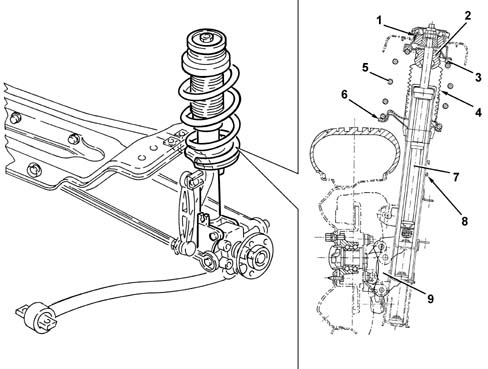

4420A REAR DAMPERS AND SPRINGS
- Path
- Descriptions > 44 SUSPENSION AND WHEELS > 4420 REAR SUSPENSION > 4420A REAR DAMPERS AND SPRINGS
- Kind
- system description
- Applies to
- all engines; all production periods
- Interactive page
- https://sloeber94.github.io/elrnDB-aGt/en/#/125000381
Applies to: all engines; all production periods
CONSTRUCTION FEATURES
SHOCK ABSORBERS
GENERAL VIEW

1 - Assembly conicity
2 - 'CELLASTO' buffer
3 - Rubber ring
4 - Protective gaiter
5 - Spring
6 - Rubber ring
7 - Shock absorber
8 - Torsion bar link mounting bracket
9 - Hub mounting bracket
The rear shock absorbers are hydraulic, double accting and pressurized to reduce operating noise. The walls and spring plate are made of reduced thickness high-tensile steel. The top mounting comprises a flexible isolation of the stem, separated from the spring mounting (by interposing a rubber pad) and the buffer. A tapered retaining system eliminates the need to bolt the block to the body. This brings advantages in terms of assembly and reliability. At the top of the shock absorber, there is a top end-of-travel buffer made of 'CELLASTO' (closed-cell polyurethane, a material which retains its original elasticity characteristics for a long time) which intervenes gradually as the shock absorber homes on bends.
The bottom of the shock absorber is attached to the hub, which in turn is attached to the suspension's longitudinal track control arm. On the stem there is also a bracket for anchoring the torsion bar reaction link
Characteristic of working principle 4420C rear suspension stabilizer bar/links
.
Springs
The coil springs are mounted in a very offset position in relation to the shock absorber axis, to reduce sliding friction. On the coils resting on the top and bottom plates, there is a rubber ring to prevent operating noise.